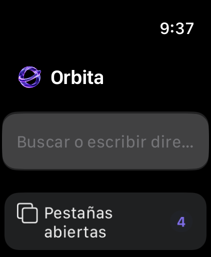
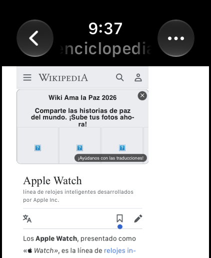
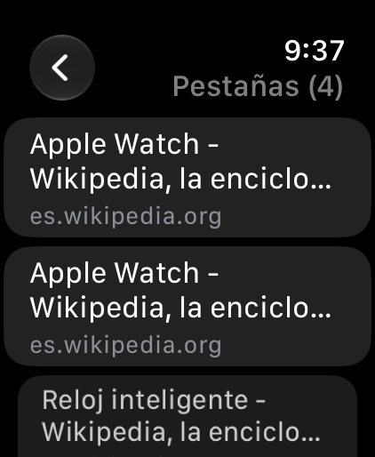
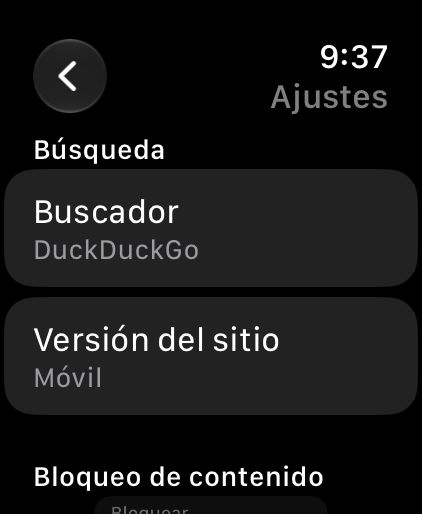

Bloqueo de anuncios nativo
Anuncios, rastreadores y avisos de cookies se bloquean dentro del motor web, antes de descargarse. Las páginas cargan más rápido y la batería dura más.
Navegador para Apple Watch
Busca, lee y mira videos directo desde tu Apple Watch. Sin anuncios, sin rastreadores y sin necesitar el iPhone.



Funciones
Todo lo esencial de un navegador, adaptado al reloj y a la Digital Crown.
Anuncios, rastreadores y avisos de cookies se bloquean dentro del motor web, antes de descargarse. Las páginas cargan más rápido y la batería dura más.
Orbita detecta los videos de cada página y los abre en el reproductor del reloj. Gira la corona para subir el volumen o adelantar.
Escucha por la bocina del reloj o pasa el audio a tus audífonos Bluetooth con un toque, y regrésalo cuando quieras.
Abre varias páginas y cambia entre ellas. Se conservan aunque cierres la app, y Orbita duerme las que no usas para cuidar la memoria.
Dicta lo que buscas o una dirección como "wikipedia punto org". Elige entre DuckDuckGo, Google, Bing o Ecosia.
Guarda tus sitios favoritos y vuelve a lo que leíste. Borra el historial cuando quieras o navega en modo privado.
Privacidad
Orbita no tiene cuentas, analíticas ni anuncios propios. Lo que haces en el reloj se queda en el reloj.
